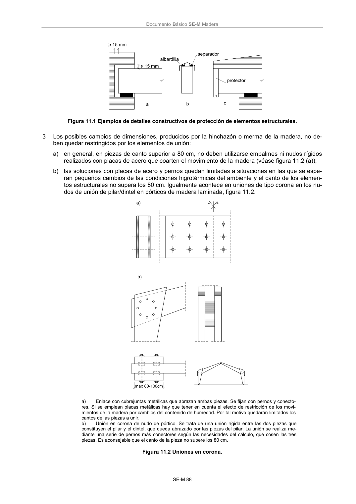

DB-SE-M · 11.1.2 Detalles constructivos · versión 2019-12-20 · capa oficial
Formatos: JSON compacto · Markdown · PDF fuente
Ámbito del documento · texto del ámbito · documento y tablas
ID técnico a0157 · PDF pág. 93-95 · jerarquía no validada por persona · contrastado con el literal de la página 93 (candidato tipográfico); no validado por persona · padre: raíz
11.1.2 Detalles constructivos 1 De cara a la formalizacion de juntas entre elementos, y para elementos formados con madera de conífera, se considerarán las siguientes variaciones dimensionales de origen higrotérmico: a) Para tableros contrachapados y de OSB, y en su plano, serán como máximo de valor 0,02% por cada 1% de variación de contenido de humedad del mismo. b) Para madera aserrada, laminada o microlaminada se podrá tomar, por cada 1% de variación de de contenido de humedad, un valor de 0,01% en dirección longitudinal y 0,2% en la transversal (esta última corresponde en realidad a la tangencial, y la radial se podrá tomar como 0,1%). 2 A continuación se enumeran una serie de buenas prácticas que mejoran notablemente la durabilidad de la estructura: b) evitar el contacto directo de la madera con el terreno, manteniendo una distancia mínima de 20cm y disponiendo un material hidrófugo (barrera antihumedad); c) evitar que los arranques de soportes y arcos queden embebidos en el hormigón u otro material de fábrica. Para ello se protegerán de la humedad colocándolos a una distancia suficiente del suelo o sobre capas impermeables; d) ventilar los encuentros de vigas en muros, manteniendo una separación mínima de 15 mm entre la superficie de la madera y el material del muro. El apoyo en su base debe realizarse a través de un material intermedio, separador, que no transmita la posible humedad del muro (véase figu- ra 11.1 (a)); e) evitar uniones en las que se pueda acumular el agua; f) proteger la cara superior de los elementos de madera que estén expuestos directamente a la in- temperie y en los que pueda acumularse el agua. En el caso de utilizar una albardilla (normal- mente de chapa metálica), esta albardilla debe permitir, además, la aireación de la madera que cubre (véase figura 11.1 (b)); g) evitar que las testas de los elementos estructurales de madera queden expuestas al agua de llu- via ocultándolas, cuando sea necesario, con una pieza de remate protector (véase figura 11.1 (c)); h) facilitar, en general, al conjunto de la cubierta la rápida evacuación de las aguas de lluvia y dis- poner sistemas de desagüe de las condensaciones en los lugares pertinentes. DocumentoBásico SE-M Madera SE-M 88 Figura 11.1 Ejemplos de detalles constructivos de protección de elementos estructurales. 3 Los posibles cambios de dimensiones, producidos por la hinchazón o merma de la madera, no de- ben quedar restringidos por los elementos de unión: a) en general, en piezas de canto superior a 80 cm, no deben utilizarse empalmes ni nudos rígidos realizados con placas de acero que coarten el movimiento de la madera (véase figura 11.2 (a)); b) las soluciones con placas de acero y pernos quedan limitadas a situaciones en las que se espe- ran pequeños cambios de las condiciones higrotérmicas del ambiente y el canto de los elemen- tos estructurales no supera los 80 cm. Igualmente acontece en uniones de tipo corona en los nu- dos de unión de pilar/dintel en pórticos de madera laminada, figura 11.2. a) Enlace con cubrejuntas metálicas que abrazan ambas piezas. Se fijan con pernos y conecto- res. Si se emplean placas metálicas hay que tener en cuenta el efecto de restricción de los movi- mientos de la madera por cambios del contenido de humedad. Por tal motivo quedarán limitados los cantos de las piezas a unir. b) Unión en corona de nudo de pórtico. Se trata de una unión rígida entre las dos piezas que constituyen el pilar y el dintel, que queda abrazado por las piezas del pilar. La unión se realiza me- diante una serie de pernos más conectores según las necesidades del cálculo, que cosen las tres piezas. Es aconsejable que el canto de la pieza no supere los 80 cm. Figura 11.2 Uniones en corona. DocumentoBásico SE-M Madera SE-M 89

PDF fuente redistribuible: copia fiel enlazada en esta página (SHA256 verificado).